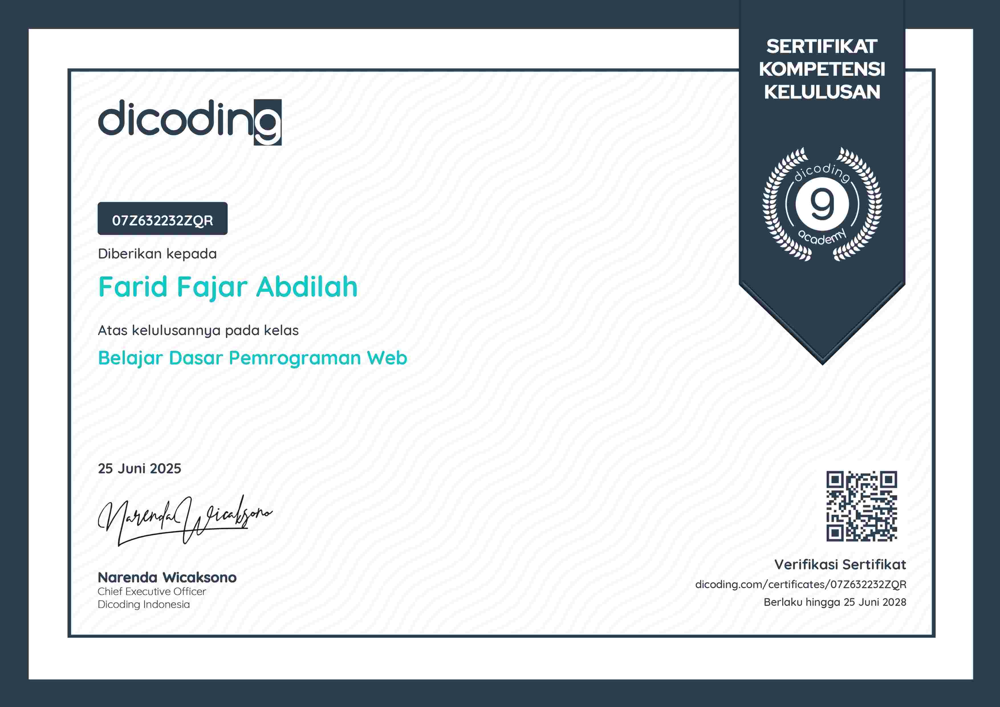
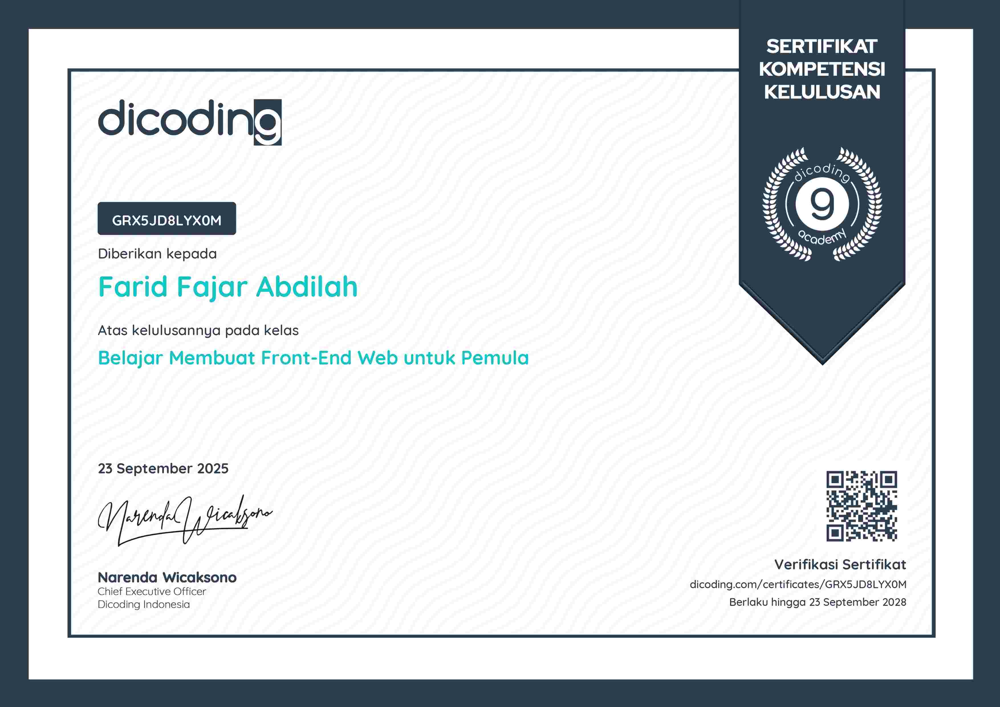
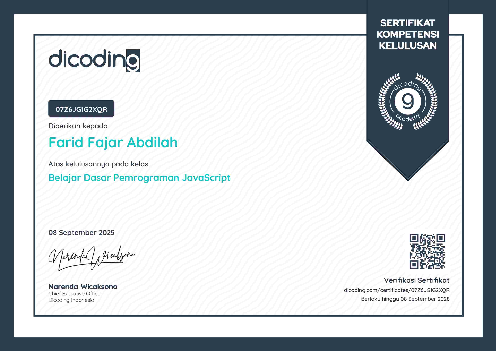
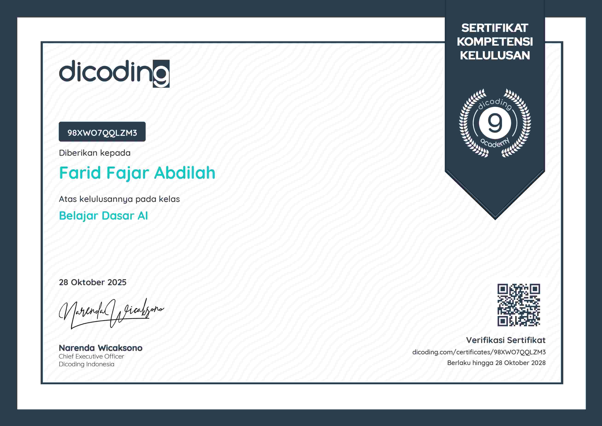
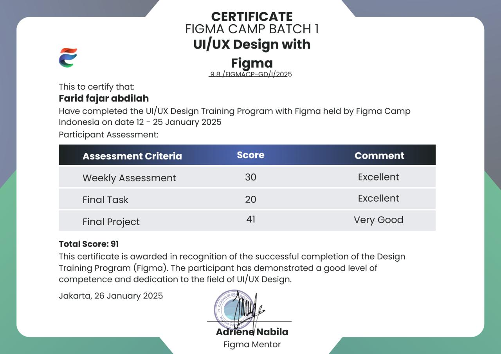

Menguasai fondasi web development: HTML semantik, CSS styling, dan struktur halaman web yang baik sebagai langkah awal menjadi web developer profesional.
VerifyMemperdalam kemampuan front-end dengan konsep lanjutan seperti Web Components, module bundler, dan pengembangan aplikasi web modern yang interaktif.
Verify
Belajar membangun antarmuka web yang responsif dan menarik dari nol menggunakan HTML dan CSS, dengan pendekatan yang ramah untuk pemula.
VerifyMembangun pemahaman dasar dunia pemrograman dan software development: mulai dari cara kerja komputer hingga pola pikir seorang developer.
Verify
Menguasai bahasa pemrograman JavaScript dari dasar: variabel, fungsi, logika, hingga manipulasi data — fondasi utama pengembangan web modern.
VerifyMemahami dasar-dasar logika komputasional: algoritma, flowchart, kondisional, dan perulangan — kunci berpikir seperti seorang programmer.
VerifyMemahami version control menggunakan Git dan GitHub: branching, merging, pull request, dan workflow kolaborasi tim dalam pengembangan software modern.
Verify
Gained fundamental knowledge of Artificial Intelligence, including basic concepts, machine learning principles, and real-world AI applications.
Verify
Menerapkan alur kerja UI/UX desain menggunakan Figma: pembuatan desain sistem, komponen atomik, prototyping interaktif, dan metodologi desain berpusat pada pengguna (user-centered design).
Verify